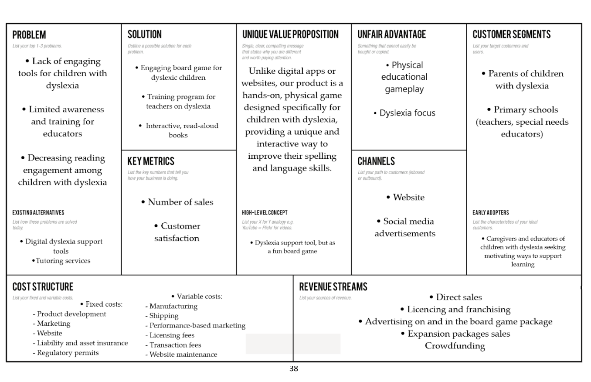

Intervention Strategy for Specialized Education
During my exchange semester at Utrecht University in Fall 2024, I developed a venture proposal titled "WordHunters: Magical Forest" for the Essentials of Entrepreneurship course. This project was born out of a desire to address a significant gap in the Dutch elementary education system: the lack of engaging support for children aged 8-11 with dyslexia. Our research revealed that many current interventions are overly technical and repetitive, which often leads to a "learning gap" where students lose motivation and struggle with self-esteem.
To tackle this, we designed an innovative board game that transforms traditional spelling and grammar drills into an immersive fantasy adventure. By integrating a "Dyslexia-friendly" framework—utilizing high-contrast visual cues and non-competitive mechanics—we created a low-pressure environment where learning feels like a quest rather than a chore. Unlike many screen-based tools, our solution emphasizes collaborative interaction, encouraging children to play alongside parents or educators to foster social bonding and human-centered support.
Beyond the product design, I conducted a deep dive into the business viability of the venture. This included building a comprehensive Lean Canvas model and a detailed financial plan to target both the direct-to-consumer and institutional school markets. The final concept was validated through extensive user interviews and a structured MoSCoW analysis, ensuring that the project effectively balanced the pedagogical requirements of teachers with the emotional needs of young learners.

Full Project Report